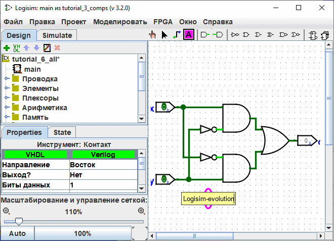
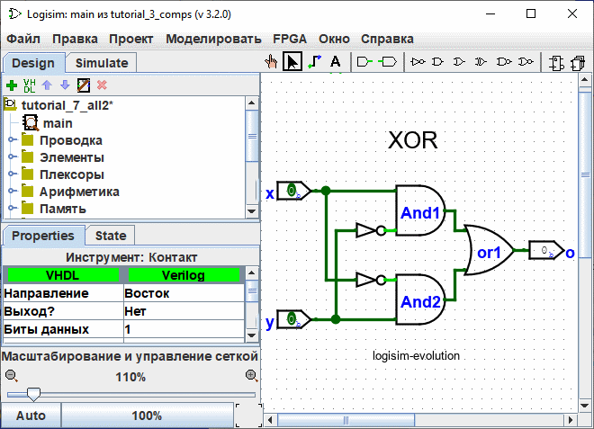

прецедент: Шаг 2: Добавление проводов
Шаг 3: Добавление текста
Добавления текста в схему не требуется, чтобы она работала, но если вы хотите показать вашу схему кому-то (например, преподавателю), то несколько меток помогут сообщить назначение разных частей вашей схемы.
Выберите Инструмент Текст ( ). Вы можете нажать на входном контакте и начать ввод, чтобы назначить ему метку. (Лучше щёлкнуть непосредственно на входном контакте, чем там, где вы хотите, чтобы был текст, потому что тогда метка будет двигаться вместе с контактом.) Вы можете сделать то же самое для выходного контакта. Или вы можете просто щёлкнуть в любом другом месте и начать ввод, чтобы поставить метку где-нибудь ещё.
). Вы можете нажать на входном контакте и начать ввод, чтобы назначить ему метку. (Лучше щёлкнуть непосредственно на входном контакте, чем там, где вы хотите, чтобы был текст, потому что тогда метка будет двигаться вместе с контактом.) Вы можете сделать то же самое для выходного контакта. Или вы можете просто щёлкнуть в любом другом месте и начать ввод, чтобы поставить метку где-нибудь ещё.

Многие компоненты принимают ярлыки, например, если вы щелкните в одной из логические ворота, вы также можете назначить ярлык

Можно модифицировать этикетку несколькими другими способами.
-
Двойным щелчком мыши по компоненту с помощью инструмента "Редактирование". (
Щелкнув по ярлыку с помощью инструмента "Текст".(
Редактируя свойство "метка" в таблице атрибутов.

Далее: Шаг 4: Проверка вашей схемы